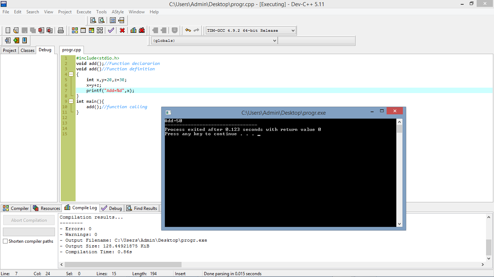
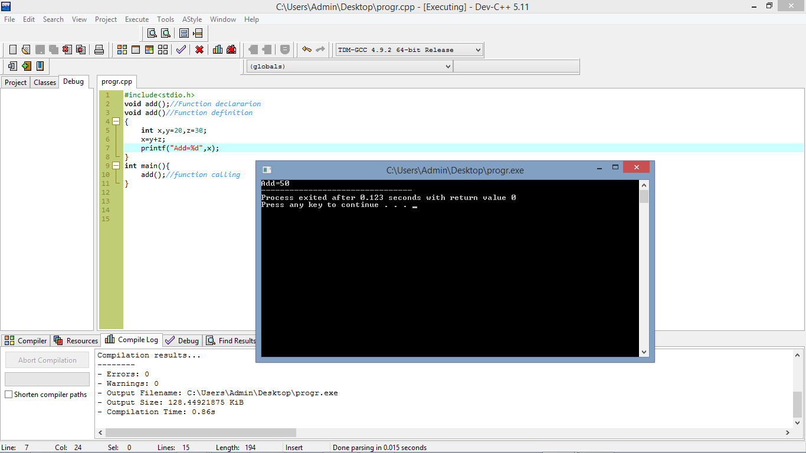
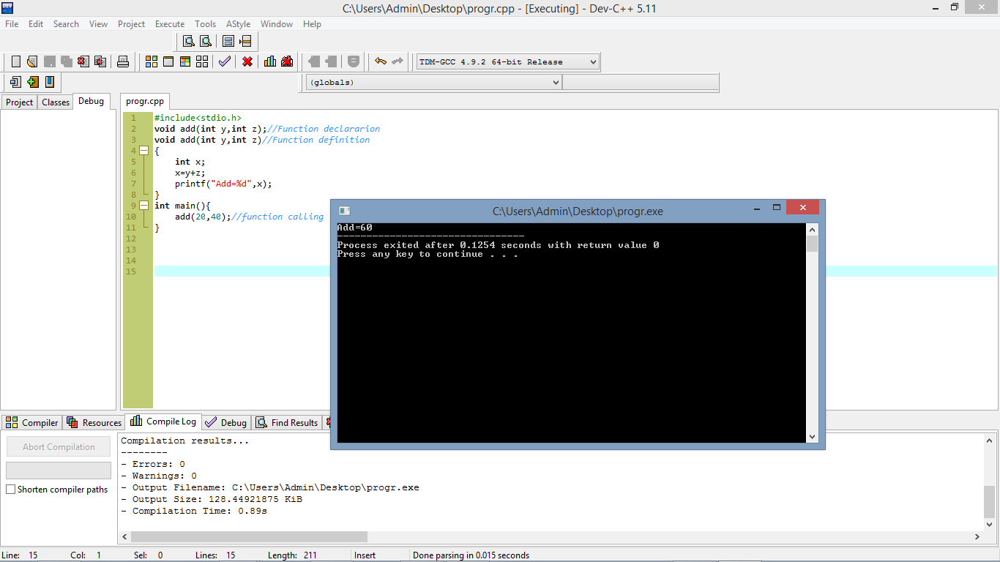
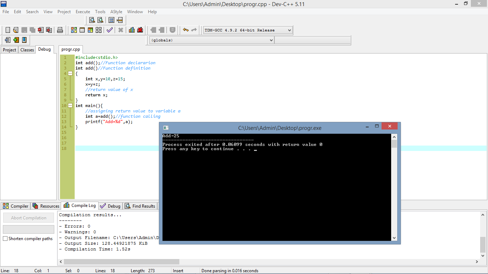

What is function
It is a collection of statement that perform an specific task.
Characteristics of functions
It executs when it is called by its name.
A large program is devided into a number of small buliding block for simplicity and tthis building block is called function.
We can call a function again and again.
The most importent features of function is code reusability.
{
//body
}
Description
| retun type | It is a keyword which indicate that which type of value is being returning by the function. If we do not retun any value then we use void keyword in place of retun_type. |
| function name | It is the actual name of the function. It is also used at he time of calling the function |
| paraneter list | It is the place where we can pass a number of parameter/variable. These variable may be used in the program. The value of parameter can be initialized or we can pass it from calling of function. It is optional part. |
| body | It is the place where the code is written to perform the specific task |
About function
Function Declaration: At this stage the function is declared.for example
void add();
This is a function declaration which void(no return type)
indicates there is no value returning by this function and add is the name of function
Function Definition:This the place where actual code is written to perform thr task.for example
{
int x,y=20,z=30;
x=y+z;
printf("Add=%d",x);
}
This is a function definition and here we can see that code is written to perform the addition task
Function calling:At this stage the function is calledfor example
add();
To call a function just write function name and put semicolon(); after it.
Example
Function predefined
The function which is predefined in the library is called predefined function.for example
printf(),scanf(),clrscr(),getch() etc,
Function usertdefined
The function which is made by the user is also known as userdefined function.for exampleadd(),sub(),mult(),div() etc.
Category of userdefined function
There 4 category of userdefined function:
- Function with ni return type and no parameter.
- Function with no return type and with parameter.
- Function with return type and no parameter
- Function with return type and parameter
Function with no retun type and no parameter
The function in which there is no parameter and there is no value returning by that function is called Function with no return type and no parameter
Example
Function with no retun type and with parameter
The function in which there is some parameter and there is no value returning by that function is called Function with no return type and with parameter
Example
In the above example there are two parameter of integer type namely y and z there at the time of calling two integer value will be passed in which first will assign to y and second will assign to z
Function with return type and no parameter
The function in which there is no parameter and there is some called function with type and no parameter
Example
In the above example there is no parameter but the function will return integer value beacause there is int keyword in the place of return type and returned value will assign to variable a
Function with return type and parameter
The function in which there is some parameter and there is some value returnig by that function is called function with return and with parameter